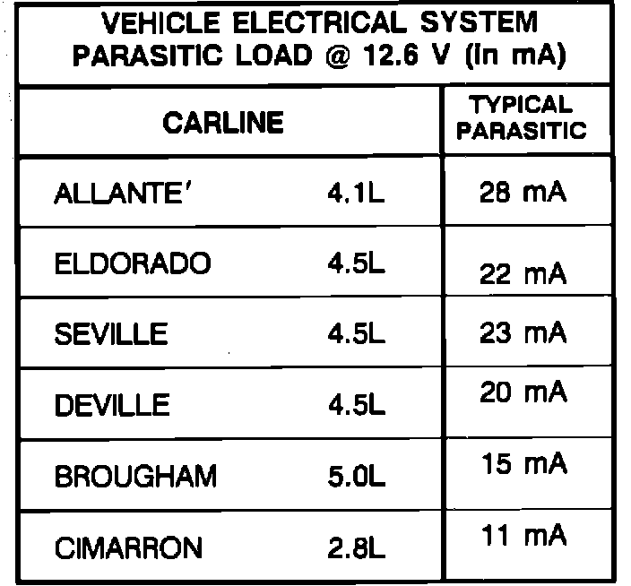
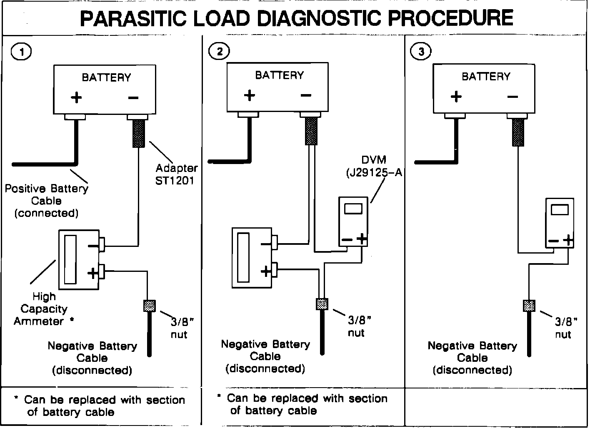
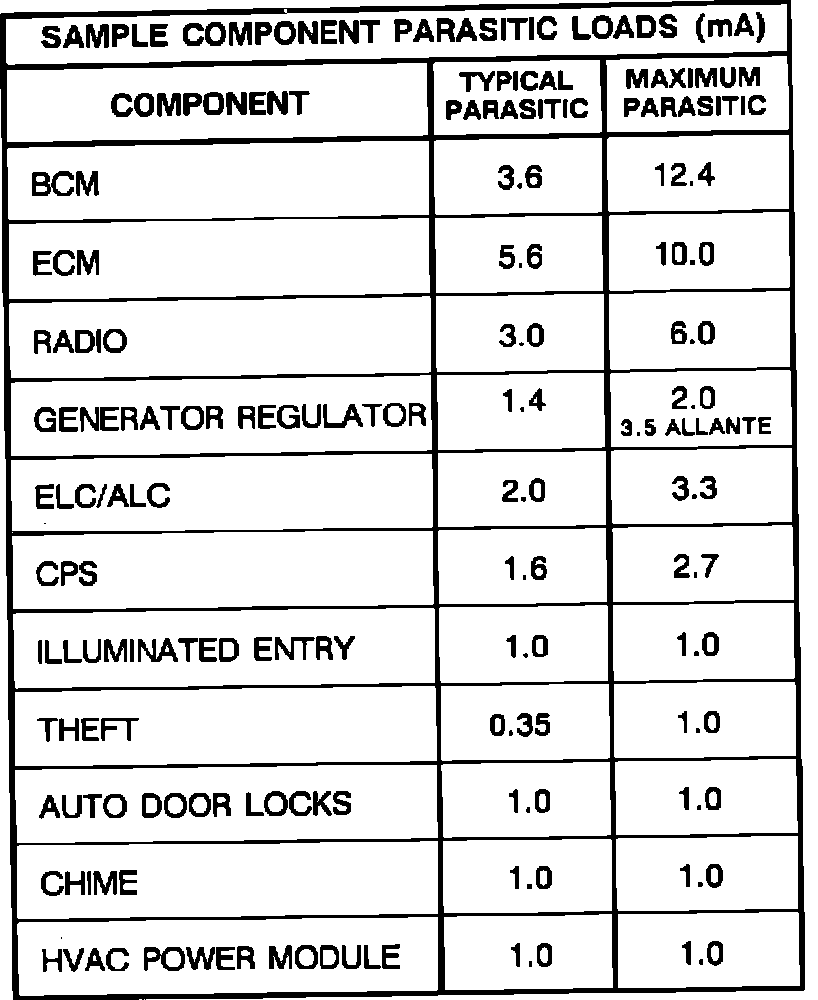

IV. Diagnosing Discharged Batteries and Parasitic Battery Drains
All no-start, slow cranking, and/or frequently discharged battery conditions should be thoroughly diagnosed to avoid unnecessary replacement of batteries. The battery should be charged and load tested in accordance with established service procedures as described in the Cadillac Service Information Manual before considering battery replacement. Examples of conditions causing low charged or discharged batteries are:^ Extended storage of vehicles.
^ Batteries already discharged when vehicle is received, due to handling in transit and at assembly.
^ Extended cranking periods due to plug fouling.
^ Accessory lights left on with engine not running (courtesy, glove box, trunk lights).
^ Insufficient recharge (ampere-hours) of discharged battery.
^ Charging system problems.
^ Continuous current draw on battery through parasitic drain.
FIGURE 4 - PARASITIC LOADS BY CARLINE:

As was discussed previously in "Battery Storage", today's Cadillacs have several electronic devices which result in very small but continuous current drains on their batteries, commonly referred to as "parasitic loads". A parasitic drain of up to 50mA is considered normal, 30mA being about average. Any battery draw above 50mA, with ignition off and retained accessory power disabled (if so equipped), is excessive. Figure 4 gives approximate average values of design parasitic current draw for each carline.
Also, refer to the table of component parasitic loads found above under "Battery Storage". These values should only be used as general guidelines when diagnosing suspect components.
FIGURE 5 - PROPER PARASITIC LOAD DIAGNOSTIC PROCEDURE:

A. How to Check the Battery Drain (Refer to Figure 5)
When checking any type of current draw, it is important to use an ammeter or digital multimeter to measure the amperage.
The electrical circuitry of most Cadillac vehicles require that the Body Computer Module (BCM) and the Central Power Supply (CPS) get an initialization charge whenever the battery power is first provided. This initialization occurs with the ignition key in the "OFF" position, and depending on how long the battery has been disconnected, the initial draw may last from 1 to 3 seconds and can range between 0.5 and 9.0 amps. Therefore, to prevent misleading readings or unnecessary fuse replacement on the digital multi-meter, J-29125, or similar equipment, the following procedure is recommended. THIS PROCEDURE is PARTICULARLY CRITICAL ON THE 1987-1988 ALLANTE AND THE 1986-1988 ELDORADO AND SEVILLE. It is recommended as a good practice for all vehicles.
1. Disconnect the negative battery cable.
2. Install a battery side terminal adapter, AC-Delco ST1201 or equivalent, in the negative terminal of the battery.
3. Install a 3/8 nut, with standard threads (16 UNC) on the negative battery cable attaching screw to assure a good electrical contact with the lead face on the cable for testing. Yellow or black finish nuts are generally non-conductive and should not be used.
4. With all lights, accessories, Retained Accessory Power (RAP), and the ignition switch off, connect a high capacity ammeter at least 10 amps from the negative battery cable to the side terminal adapter. This high capacity ammeter is connected to verify whether or not a high current draw is occurring at a constant rate. It is this type of high current draw which will blow the fuse in lower capacity ammeters. After the initial draw occurs, the ammeter reading should drop below 1 amp.
NOTE: If a high capacity ammeter is not available, install a section of heavy wire (preferably a battery cable) between the existing battery negative cable and the side terminal adapter. Allow ample time (approximately 30-60 seconds) for the initial draw to occur and proceed to step 5.
5. With the high capacity ammeter or battery cable section still connected, connect the digital multi-meter, set to the 2000 DCmA range, in parallel with the high reading ammeter.
FIGURE 4 - PARASITIC LOADS BY CARLINE:
FIGURE 6 - SAMPLE COMPONENT PARASITIC LOADS (IN mA):

6. Disconnect the high capacity ammeter and take the reading with the digital multi-meter.
A current draw of 5OmA or less (see values in Figures 4 and 6) indicates that all lights and accessories are off and that there is no unexplained current draw. Care should be taken to allow for a time delay before reading the meter on vehicles equipped with Electronic Level Control (ELC) (not found on Allante).
Due to this initialization process, test lamps CANNOT be used in place of ammeters to diagnose current draw conditions. The voltage drop across the test lamp prevents the initialization process from occurring.
Clamp-On Ammeters:
Clamp-on ammeters may be used if the meter can measure in the milli-amp range and if the meter clamp can fit around all of the battery negative or positive cables. All of the cables must fit in the clamp with the clamp closed to be sure that all of the parasitics are being measured. Zero the clamp-on ammeter carefully. Magnetic fields from engine electrical items (generator, ignition, solenoids) and from shop sources (fluorescent lights, power cables) can alter the clamp-on meter readings. If the parasitic readings are not repeatable, use the series measurement method described in this bulletin.
B. Determining the Source of the Drain
Once it has been determined that a parasitic drain in excess of 50 mA exists, a visual inspection of the vehicle should be conducted. Check to see if there are any unwanted lights on, motors running or switches/relays activating.
FIGURE 4 - PARASITIC LOADS BY CARLINE:
If no cause for the draw is immediately apparent, it may be possible to narrow in on the source by systematically removing fuses and circuit breakers, one by one, from the fuse panels. This should be done while monitoring the ammeter so that a disruption of the drain will be evident. Refer to Figure 4 for average and maximum parasitic loads for various vehicle components.
FIGURE 6 - SAMPLE COMPONENT PARASITIC LOADS (IN mA):
Figure 6 gives an approximate indication of typical and maximum parasitic loads by component in milli-amps (mA).
In addition to parasitic loads, a certain amount of self-discharge is always occurring as a result of internal chemical reactions even when the battery is not connected. The higher the ambient temperature, the greater the amount of self-discharge. This explains why the number of discharged batteries may increase at your location in very hot weather. The original equipment battery has a much lower rate of self-discharge than conventional batteries, however, self-discharge at 100 degrees ambient can be as high as 7mA.